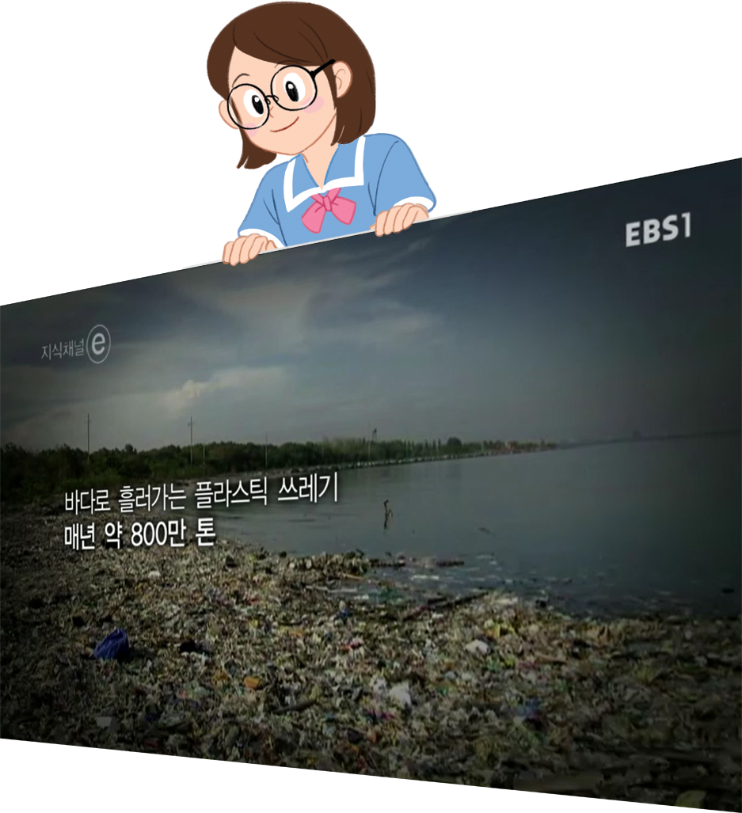

- 그림
- 물음 +
- 물음 +
-
쓰레기는 왜
없어지지 않는 걸까?쓰레기는 얼마나
많이 생기는 걸까?[출처: 이비에스(EBS), 2017. 5. 4.] -
우리가 쓰레기 문제에 관심을 가져야 하는 까닭은 무엇인가요?
-
예환경이 오염되고 있습니다.
-
예바다 생물들이 죽어 가고 있습니다.
-
-
영상을 보고 어떤 생각이 들었나요?
-
예쓰레기 문제가 심각합니다.
-
예우리가 버린 것들이 바다로 많이 흘러가는 사실을 알고 죄책감이 들었습니다.
-